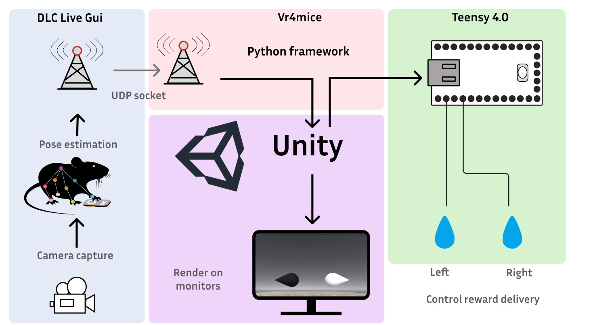

FreelyMovingVR4mice overview#
{kind=link}

This documentation provides a user guide for the installation and getting an augmented reality system up and running.
FreelyMovingVR4mice uses two GUIs (vr4mice and Deeplabcut-live-gui) that were both developed within the Mathis lab. These two packages communicate with each other through a socket and allow for DeepLabCut poses to be passed to a video game so that the video can be rendered dynamically in real-time.
Hardware requirements#
Teensy 4.0 (or above) board
Windows OS 10 or above
GPU for DeepLabCut, with at least 8 GB of memory
Software requirements#
Python version: 3.10.12 (this version only)
Unity3D (Version tested: 2022.3.15f1)
see setup.cfg for additional requirements
The augmented reality system runs on a python framework, vr4mice, this code was initially developed by Gary Kane, Michael Beauzile, and Mackenzie Mathis as a simple and scalable control suite for a host of systems neuroscience tasks. This was expanded with Thomas Sainsbury, Sebastien Hausmann, Mariia Popova and Jessy Lauer. This framework handles input and output to a teensy, parses actions to the Unity video game and handles all data logging for the experiments. In addition, it provides a simple GUI for the user to run the experiments and manually change parameters which control the experiments trial-like structure.
vr4mice GUI#
To run an augmented reality experiment, vr4mice requires two objects:
A
unity buildthat can be loaded - this is designed in unity in C#. It uses the Unity’s mlagents-envs package (version: 1.14.1) such that actions can be received from python and so that game observations can be sent to python. The unity build that we have provided can be found within themouse_task/unity_arfolder.A python
mouse taskscript - These are a class of scripts that can be loaded within the teensy experiments GUI and handle the organization of the task. This script specifies what parameters will be sent to the game and the teensy throughout the experiment. These can be on a frame by frame, trial by trial or block by block basis. Currently, we provide two example teensy task scripts: The first script that reads from a movie of a mouse, this script can be used to test your installation of teensy experiments and a second script which runs on a incoming video stream from the camera. This second script can be modified as we come up with the final idea for the experiment and the training tasks! An example can be found heremouse_task/mouse_VisualDiscrim_socket_thread.py.
DeepLabCut-live-GUI#
To pass actions to vr4mice from dlc key points in real time you will also need a working installation of deeplabcutlive-gui. This handles reading images from the camera and live pose extraction. Deeplabcutlive-gui requires that a processor script is loaded, this is a file that computes various attributes such as the x, y position of the mouse and then it sends this data to via a socket to the vr4mice gui. An example processor can be found in mouse_task/dlc_utils/dlc_processor_socket.py
These documents provide an explanation of how to use both of these objects alongside an explanation of how to build the rig and installation.
Rig Calibration checklist#
Before running a mouse on the rig make sure you complete this checklist for testing the latency and calibrating the system:
Latency testing: make sure that your photodiode circuit is connected and run a latency test. This can be done by running a session without the mouse being in the box. You can then compare the round trip latencies by running this jupyter notebookmouse_task/latency_tests/Latency_test_notebook/Latency_testing.ipynb.Calibrate the monitor brightness: Follow this doc to ensure that the monitors have similar brightness across labs.Calibrate the water valves: Check that your water ports are delivering between 3-5ul of water using thiscalibration method